Una cadena es una secuencia de caracteres. Las cadenas son una parte fundamental de la mayoría de los programas, así pues Java tiene varias características incorporadas que facilitan la manipulación de cadenas. Java tiene una clase incorporada en el paquete java.lang que encapsula las estructuras de datos de una cadena. Esta clase, llamada String es la representación como objeto de una matriz de caracteres que no se puede cambiar. Hay una clase que la acompaña, llamada StringBuffer, que se utiliza para crear cadenas que pueden ser manipuladas después de ser creadas.
String y StringBuffer
El paquete java.lang contiene dos clases de cadenas: String y StringBuffer. La clase String se utiliza cuando se trabaja con cadenas que no pueden cambiar. Por otro lado, StringBuffer, se utiliza cuando se quiere manipular el contenido de una cadena. El entorno de desarrollo Java proporciona dos clases para manipular y almacenar datos del tipo carácter: String, para cadenas constantes, y StringBuffer, para cadenas que pueden cambiar.
Como son constantes, los Strings son más económicos (utilizan menos memoria) que los StringBuffers y pueden ser compartidos. Por eso es importante utilizar String siempre que sea apropiado.
¿Como Crear una cadena?
Muchos Strings se crean a partir de cadenas literales. Cuando el compilador encuentra una serie de caracteres entre comillas (" y "), crea un objeto String cuyo valor es el propio texto. El esquema general es el siguiente:
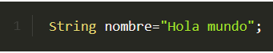
También se pueden crear objetos String como se haría con cualquier otro objeto Java: utilizando new.
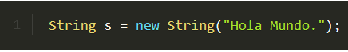
El constructor anterior es equivalente pero es mucho más eficiente el primer método ya que, el segundo método crea dos objetos String en vez de sólo uno.
Se pueden utilizar cadenas literales en cualquier lugar donde se pueda utilizar un objeto String. Por ejemplo, System.out.println() acepta un argumenteo String, por eso se puede utilizar una cadena literal en su lugar:
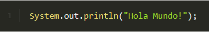
Uso de cadenas
◉ Concatenación de cadenas Java permite concatenar cadenas facilmente utilizando el operador +. El siguiente fragmento de código concatena tres cadenas para producir su salida:
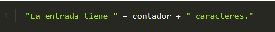
Dos de las cadenas concatenadas son cadenas literales: "La entrada tiene " y " caracteres.". La tercera cadena - la del medio- es realmente un entero que primero se convierte a cadena y luego se concatena con las otras.
◉ Longitud de cadenas uno de los métodos mas habituales que se utilizan en un String es length, que devuelve el nro. de caracteres de una cadena:
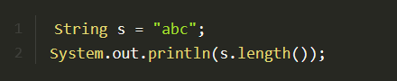
El resultado de ejecutar el código anterior, sería la impresión de 3, que se corresponde con la longitud llamada s.
Un punto interesante en Java es que se crea una instancia de objeto para cada literal String, por lo que se puede llamar a los métodos directamente con una cadena entre comillas, como si fuera una referencia a objeto, con este ejemplo se volvería a imprimir un 3:
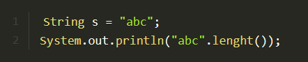
◉ Extracción de caracteres Para extraer un único carácter de una cadena, se puede referir a un carácter indexado mediante el método charAt, la sintaxis es la siguiente Objeto_cadena.charAt(índice);
Devolverá 'b'
Si se necesita extraer más de un carácter a la vez, puede utilizar el método getChars, que le permite especificar el índice del primer carácter y del último más uno que se desean copiar, además de la matriz char donde se desean colocar dichos caracteres.
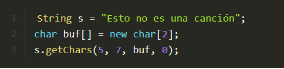
◉ Comparación de cadenas Si se desean comparar dos cadenas para ver si son iguales, puede utilizar el método equals de String. Devolverá true si el único parámetro está compuesto de los mismos caracteres que el objeto con el que se llama a equals. Una forma alternativa de equals llamada equalsIgnoreCase ignora si los caracteres de las cadenas que se comparan están en mayúsculas o minúsculas.
El método equals y el operador == hacen dos pruebas completamente diferentes para la igualdad. Mientras que el método equals compara los caracteres contenidos en una String, el operador == compara dos referencias de objeto para ver si se refieren a la misma instancia. Por tanto, no podemos usar el signo == por que esta sería una comparación binaria de punteros a memoria y no nos devolvería el valor correcto
◉ Comparación con CompareTo
Si lo que queremos es comparar cadenas para ordenarlas, una opción es usar el método compareTo() de la clase String. Este método devuelve 0 si ambas cadenas tienen el mismo contenido, negativo si el String es menor -va antes- que el parámetro que se le pasa y positivo si es mayor. Es decir:
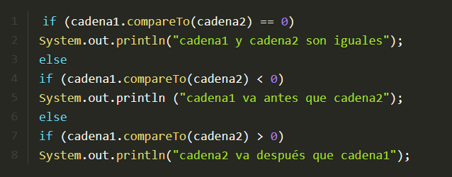
◉ Conversión de minúsculas a mayusculas de una cadena
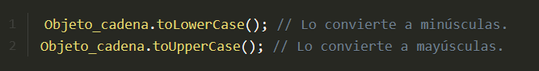
Conversión de objetos a Strings
◉ toString()
A veces es conveniente o necesario convertir un objeto a una cadena o String porque se necesitará pasarlo a un método que sólo acepta Strings. Por ejemplo, System.out.println() no acepta StringBuffers, por lo que necesita convertir el StringBuffer a String para poder imprimirlo. El método reverseIt() utiliza el método toString() de StringBuffer para convertirlo en un String antes de retornar.return dest.toString();
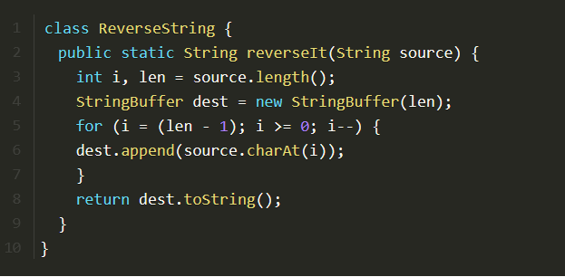
Todas las clases heredan toString() desde la clase Object y muchas clases del paquete java.lang sobreescriben este método para proporcionar una implementación más acorde con la propia clase. Por ejemplo, las clases Character, Integer, Boolean, etc.. sobreescriben toString() para proporcionar una representación en String de los objetos.
◉ valueOf
Como es conveniente, la clase String proporciona un método estático valueOf(). Se puede utilizar este método para convertir variables de diferentes tipos a un String. Por ejemplo, para imprimir el número pi:
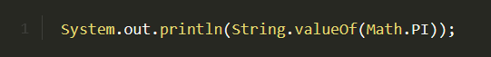
◉ Convertir cadenas a números
La clase String no porporciona ningún método para convertir una cadena en un número. Sin embargo, cuatro clases de los "tipos envolventes" (Integer, Double, Float, y Long) proporcionan unos métodos de clase llamados valueOf() que convierten una cadena en un objeto de ese tipo. Aquí tenemos un pequeño ejemplo del método valueOf() de la clase Float:
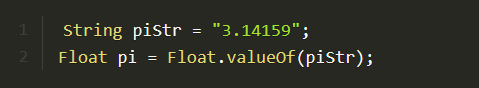
◉ Extraer un substring de un string
En muchas ocasiones es necesario extraer una porción o substring de un string dado. Para este propósito hay una función miembro de la clase String denominada substring.
Para estraer un substring desde una posición determinada hasta el final del string escribimos
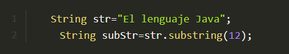
Se obtendrá el substring "Java".
Una segunda versión de la función miembro substring, nos permite extraer un substring especificando la posición de comienzo y la el final.
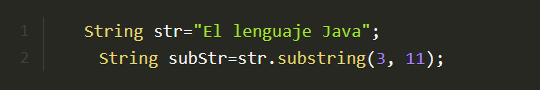
Se obtendrá el substring "lenguaje". Recuerda, que las posiciones se empiezan a contar desde cero.